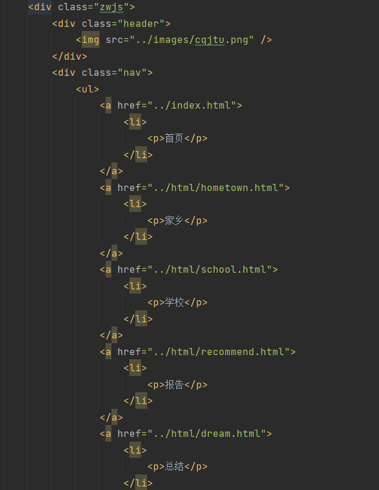
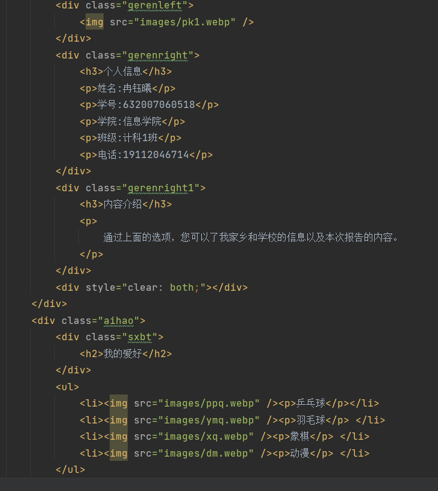

通信软件开发与应用
做的什么：
该项目做的是一个自我介绍的网页，可以从中了解到我家乡，学校，报告，个人的基本信息
开发过程：
原计划做一个动态网页，但期末周的紧张导致学习进度慢做了一个简单的五个静态页面，先学习了html在学了css静态较为简单所以说问题不是多
我将五个页面的跳转全部放在一个页面方便进行观看，以下是前面的代码
然后再根据具体内容的不同来进行不同的展示，如首页界面
其它页面都大同小异，就不一一展示了
遇到的问题：
动态网页未能完成好，选择了较为简单的静态网页。希望后面暑假能把angular学会，也希望可以熟练应用网页托管技术